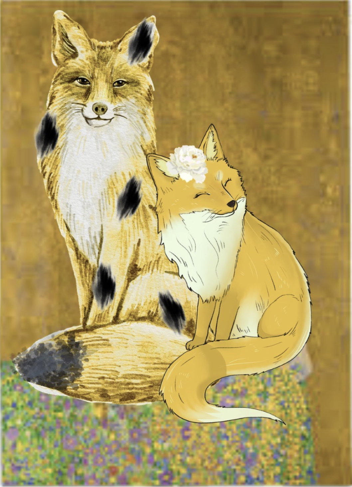

M

Le tableau "Le Baiser" de Gustave KLimt a été peint entre 1908 et 1909 et s'inscrit dans le mouvement symbolique. Gustave Klimt est d'abord orfèvre comme son père. Ceci explique la présence très fréquente de feuilles d'or dans ses oeuvres. "Le Baiser" est une représentation d'un couple. Le couple est vêtu d'un manteau nuptial. Les cercles et les fleurs aux couleurs représentent la féminité et la fertilité tandis que les formes rectangulaires et noires représentent la force masculine.

"L'amour manitou"
Au tout début du Monde, deux renards sont nés d'une lumière dorée. Lori, la gardienne de la Terre guidait chaque âme avec sagesse. Eloi, le porteur d'amour, appaisait les coeurs d'un simple souffle. Ensemble, ils devinrent les deux plus grandes divinités des renards,l'équilibre entre la force et la tendresse.
- Taille: 180cm x 180cm
- Année: 1909
- Lieu: Palais du bèlvédére à Vienne
- Fait avec des feuilles d'or